CS108: GAME DESIGN BLOG
May 05 2020: Blog Post 9
Blog Post 9: Course Reflection

After a semester long of CS108, I officially learned how to design a game. I did not realize there was so much to it. The thought process, the design process, testing, working out the mechanics, etc., was all very interesting to learn. I always thought of games very simply. Now I know that it is much more than that. The most interesting thing I learned was how to animate my game. Even though I was not the artist, but the programmer, it was really cool to learn how to turn a sprite sheet into an animation and how to code the character to reflect that animation. If I did not take this class, I would have never learned how to do that. I also found Unity overall very cool. I liked how there were so many kinds of games you can create with Unity, and all that it really took was my imagination. This class really taught me how to appreciate games and everything it takes to make it successful. Overall, I enjoyed this class and I really wished that quarantine did not happen. It was so much fun and I always looked forward to every class session.
May 05 2020: Blog Post 8
Final Project: Guyfro's Quest for Gel
Game Name: Guyfro's Quest for Gel
Role: Programmer
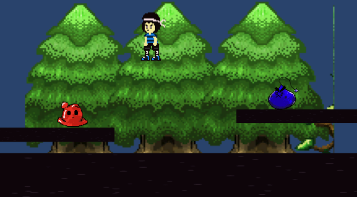
Synopsis: In a world where hair styling is a low priority and hair gel has become a scarce resource, Guyfro dreams of a world where you can get hair gel... or any gel.
Our project is to create a combat game where the main character attacks slimes. As he continues to attack the slimes, more slimes will spawn. Different types of slimes will spawn, gradually getting stronger. Eventually, the player will reach the main boss. The main boss must be defeated in order to win the game.
Currently, we are trying to finish up the project by adding the enemies and attack functions. I am trying to implement the start screen, end screen, pause screen, and making enemies a deadzone. This will allow the player to have an easy experience playing as they are able to exit and start the game quickly. Also, working on the enemies, this will allow the game to end if the player dies from them. Our artists are still working on the combat sprites, enemy sprites, and background sprites. Once everyone does their part and it is all put together, the game should be nicely done. Overall, with the progress made from the Alpha, everything seems to be making good progress. The character moves smoothly and is able to jump. Our enemies do not move yet, but the sprites for them are done. I think we will have a successful game by our presentation date. I am excited to see how this game turns out. I think it will be very fun and cute based on the artwork.
April 27 2020: Blog Post 7
JackBox Game
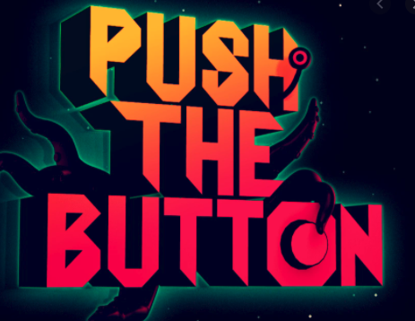
Photo credits: https://jackboxgames.fandom.com/wiki/Push_The_Button
1. Discuss mechanics and your experience with your peers in the game.
Some game mechanics of JackBox, more particular the game Push The Button are acting, memory. player elimination, team-based game, and voting. I was human during the game. It was difficult for me to really get a sense of who was an alien when playing the game with my classmates because I did not talk over voice. I think this game requires a lot of interactions amongst players, allowing people to deduce who is human and who is alien. I think it was interesting seeing how everyone was trying to learn how to play, how everyone got defensive quickly when they were acused, and seeing the type of answers they had for each test. It was frustrating for me too because no one wanted to vote during the game. I rather vote and lose to aliens then run out of time and automatically lose to aliens. At least then, I can say "SEE I KNEW YOU WERE AN ALIEN". Overall, it was a fun and wholesome experience. I would love to play again.
2. How does playing with an audience affect the game?
Playing with an audience technically gives the players an advantage. When playing jackbox with my classmates, those who join as an audience and were on audio, they often said the right answer to the trivia games. This allowed players to select the correct answer even though they did not know it, giving them an advantage. Also, having an audience kind of swayed the outcome. For example, during Trivia Murder Party, I was leading (username: Tao), and I was also host. Someone said that "hosts never wins", so that made everyone attack me and "take me down". It was pretty funny though, in my opinion.
April 17 2020: Blog Post 6
Video Game Prototype
Game Name: Tappy Rocket
Role: Programmer
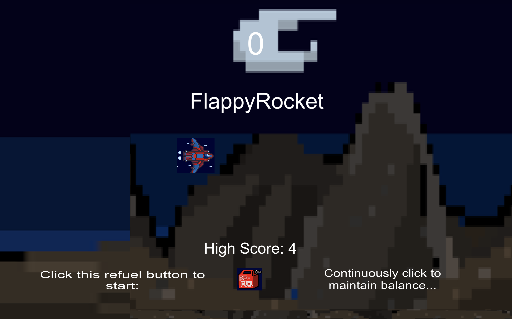
List any known issues, and give instructions on how to play the game.
Known issues:
Asteroids do not kill the player. I try to make the asteroids a deadzone, but it did not register in the game. I am not sure why.
How to play:
To play the game, simply click the "refuel" button and start. Tap on your mouse to keep the rocket afloat and just dodge the asteroids as they come towards you. Try not to get pushed to the left edge, hit the ceiling, or hit the ground because that will make you lose the game.
Briefly discuss the game as it exists now (you may talk about what you would do with it, what is working now, about the journey from the alpha (last blog post))
The game as it exists now is very mediocre. Compared to the alpha, there are changes that are made to make the game go more smoothly. I was able to make more deathzone so the game ends when the player gets pushed offscreen by the asteroid. I also added a ceiling to "kill" the player when they touched the top, rather than going all the way up and dodging the asteroids. This glitch in the Alpha allowed players to continuously play without any challenge. I also moved the asteroids so they are more spread out, leading to a harder game. In the previous game, I noticed that some of the asteroids would just move at the top and bottom, leaving the center completely unattended. This allowed players to easily move through and get a high score. I do not want to continue this game. I think it is okay as it is; it can definitely be improved, but I rather go into a different direction for the final project.
April 08 2020: Blog Post 5
First Playable
Game Name: Tappy Rocket
Role: Programmer
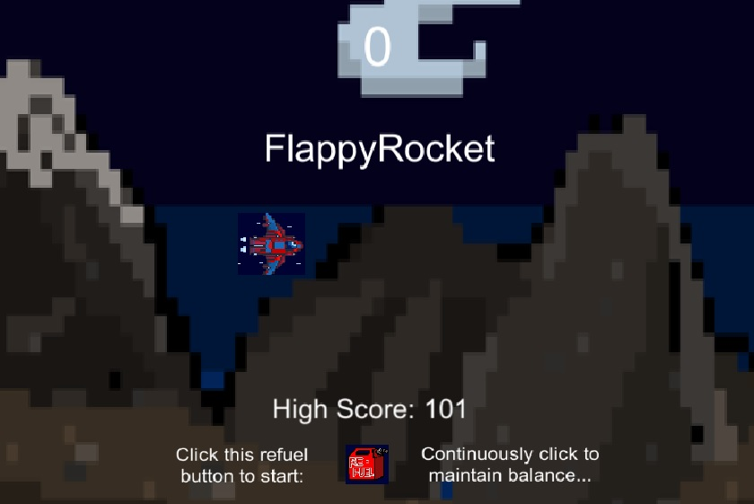
1) How did players respond to your game?
Players were able to successfully run the game on both Mac and Windows. A positive feedback that we got was that the music blended in well with the game. I credit my partner with this. Another positive feedback we got was that the rocket's movement was very smooth and that there were no issues.
Players noted that the asteroids did not do any damage and sometimes they would get stuck between them, but the game would not end. They also noted that it was easy to maneuver between them, or just easily fly on top, out of the screen to dodge it. Some improvements that were recommended are making the rocket's graphic blend more with the background, making the asteroids move faster and perhaps do some damage on the rocket, and to have a deadzone when flying outside of the map. Also, someone mentioned that in certain areas of flying, their score did not increase.
2) What do you plan to change or keep in your game based on this feedback?
Based on this feedback, I plan to ask my artist to create another rocket that does not have a box surrounding it. I plan to keep the asteroids, but I will make them move faster and try to make them a deadzone. I will probably try to space them further apart, allowing the player to maneuver between them, rather than getting stuck. Furthermore, I plan to make the ceiling a deadzone, similarly to the ground. The last improvement that I would make is changing the score zone to accomodate a larger area, so no score will be missed.
February 27 2020: Blog Post 4
Video Game Lab
1) Make a critical connection between 2 of the games you played
Two of the games I played that had a critical connection were Tetromino Slide and Super Puzzle Platformer. Both of them used the mechanism pattern building. Both games required connection of specific blocks in order to clear the board. However, there were clear differences between the games. Tetromino Slide required clearance by line. As long as a row was filled with blocks, it would be clear. Therefore, I had to connect the blocks in a way that filled up the row. On the other hand, Super Puzzle Platformer, the blocks dropped by random. To clear the blocks, my character had to shoot at the blocks breaking them down, eventually allowing them to disappear. It requires pattern building in terms of when there are more blocks of the same color connected, it will remove altogether when being shot at.
2) Talk about the difference between observing and playing a game
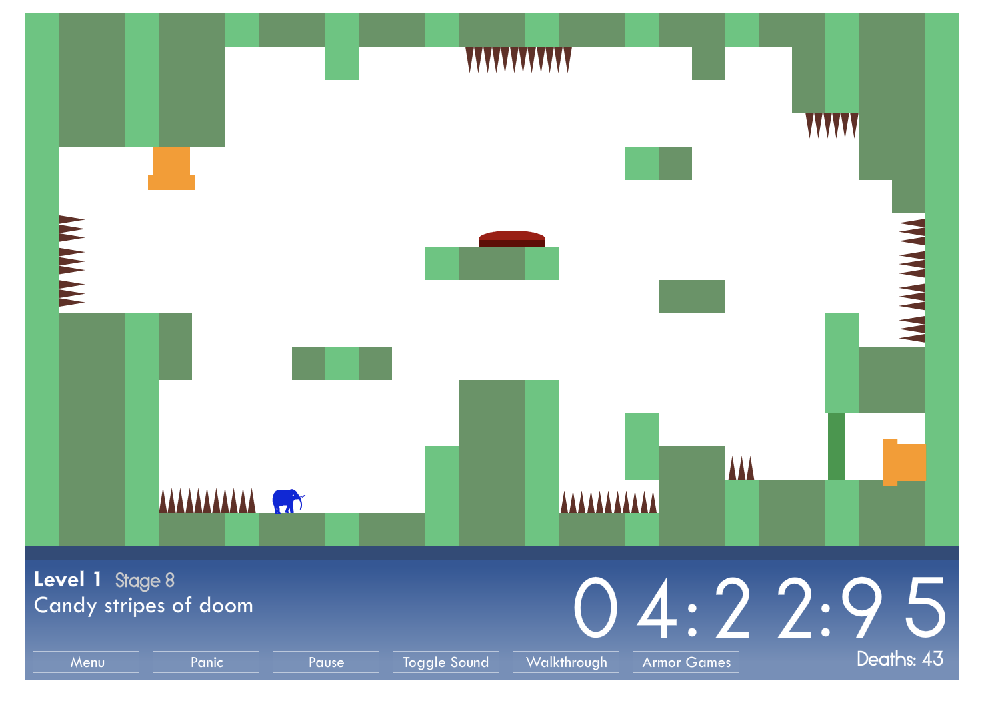
A game that I both played and watched was This is the only level. When I played it, it was pretty tricky/difficult. I had a hard time on the striped map. I was not able to land or move correctly, and it was definitely a struggle. However, when Evan played, it seemed like a total breeze. He made it look so easy and simple. Being a player in the game made me realize that I have no patience playing. I always want to rush through it, going head on, rather than being cautious of my next move. As a result, I end up dying over and over. Evan, on the other hand, takes his time and recalculates his moves if they fail the first time. It was really eye opening seeing the difference on how we tackled the game. Overall, I enjoyed being a spectator more than playing the game.
February 19, 2020: Blog 3
Prototyping
1) a basic description of your game, rules are optional but have to be submitted later to Paper Prototype
-A two player game where the goal is to take over every color grid on the board.
-Each player starts off with 10 color cards, placing their respective troops (blocks, elements, and pawns) in each grid.
-When it is the players turn, they place an additional 3 troops wherever they want on the grid.
-At the beginning of each turn, the players are allowed to rearrange their troops. Once that is finished, players can begin attacking their opponent.
-To attack, players must have at least 2 troops on their respective grid.
-When attacking, each player draws a card. The highest card wins. Discard the losing troop from the grid.
-If there is a tie, draw again.
-Attacker draws first.
-To move to another color, travel through the WAR ZONE or the empty grids. Each move costs one turn.
2) a play log
-This log should include three play sessions and should be a form of a session report but more focused on the rules changes you have made and why you made them. Note that two of these sessions should take place in class with a third on your own.
---Game 1
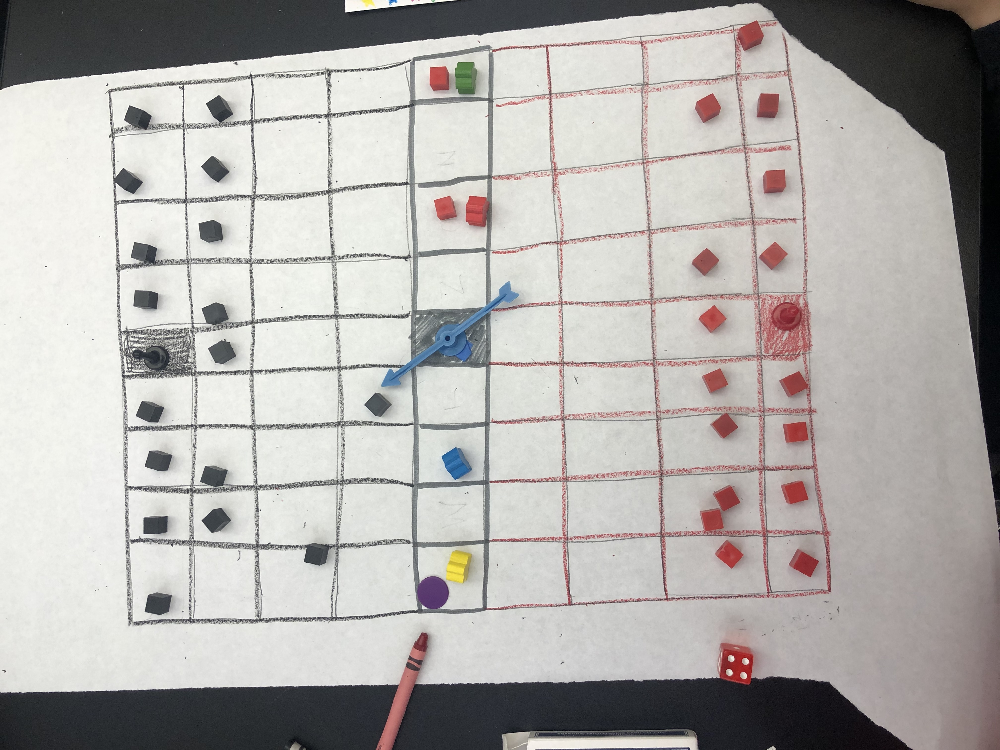
-The troops are set up 20 (19 blocks, 1 pawn) on each end of the board, with the WAR ZONE being in the middle. In the WAR ZONE, there are 4 elements placed throughout.
-To determine the first player, spin the spinner. Whoever it lands on, goes first. Nicole spins, and it lands on me. I go first.
-My color is black, so I drew three cards. I get the summation of those cards, and grab the first number. My total is 15. I take the 1, and move 1 space forward. My turn ends.
-Nicole’s color is red. She draws three cards and her total is 24. She takes the two, and moves two steps forward. Her turn ends.
-Eventually, by the 4th round, I messed up. I moved in random directions, leading me nowhere. Nicole on the other hand, strategizes and gets two elements: Fire (red) and Earth (green).
-Here, we have no idea what to do… We are not sure what the elements should be doing so we decide these elements should have power cards. Each element has its own special power up.
-But what is the end goal of the game?
-Too bad we ran out of time to get further…
---Game 2 (solo)
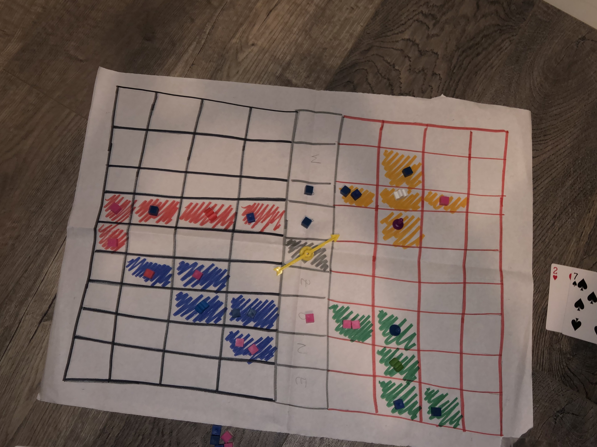
-I decided to change the game so that the elements blocks and pawns had purpose. The pawns were now worth 3 troops (3 blocks) and elements worth 2 troops (2 blocks). Each player gets to place a total of 10 pieces on the board, 1 pawn, 2 elements, 7 blocks, totaling to 14 troops.
-The elements no longer had special power, but their assigned color were placed on a card. 5 cards per each element, totaling 20.
-Once my board was set up and all of my troops were in their respective grids, I began to play.
-At the beginning of each turn, I add an additional one troop to the board.
-I play the game, acting as each player during every round. I attack and defend. I realize that throughout this play process, there is no significant progress. I also realize that there is no place to jump between each territory.
-Ending the game, I decided to make some changes.
-I decided to add 3 troops per round and I made the WAR ZONE an area that each troops can travel through, to get to the next territory.
---Game 3
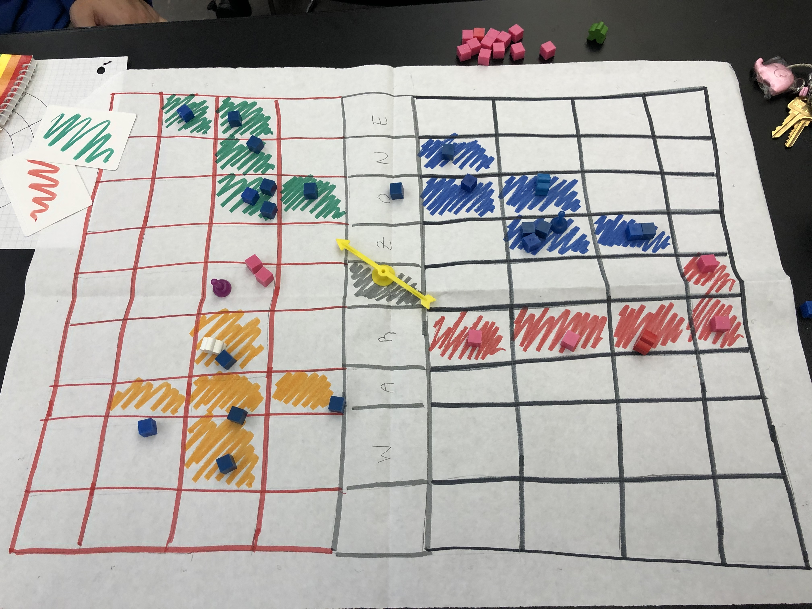
-With all the changes I had made in my solo game, I began a new game with Sean, explaining to him all of the rules.
-I start passing out the color coded cards. I spin the spinner. It lands on me. I get the first pick on where to place my troops. I flip over my card, and see that it is blue. I place it on the center blue grid. Now it is Sean’s turn. He flips over his card and sees green. He places it on the green.
-This goes on 20 times, until all of the grid spaces are filled with our troops. Now we can begin. I begin the game and spin the spinner again. It lands on me.
-I start off by adding three troops to the grid. I add it to blue. I place it strategically so that I can attack Sean. I call the attack, and we both draw a card. My card was an 8, his was a 6. My attack was successful. I take over his grid and remove his troop. I end my turn.
-Sean adds his troop to the board. He places it on red. He decides to attack me. We both draw. He draws an Ace and I draw a King. Ace is low, so he loses a troop. His attack failed. He tries again, and he draws a Queen. I drew a 3. My defense failed, and his attack was successful. He takes over my grid and I remove my troop.
-This goes on for quite some time. Eventually, I take over all of the green and blue. He takes over almost all of the yellow and red.
-We ran into an issue… How do we go from one color to another without needing to traverse through the WAR ZONE? We decided that we can travel through each blank grid. However, it will cost one turn per move. This allows us to infiltrate one another from different directions.
-Sean begins by reinforcing his troop at the yellows borders. Then he moves into the blank space hoping to break through into the greens territory where I am controlling. He waits until his turn ends.
-I reinforce my troops at the border he wants to attack. Then I move my troops to where my one troop reminds in the orange. Sneakily, I began to attack him. I slowly take over the orange. It takes a few rounds, but eventually I was able to remove his troops altogether from the orange.
-Unfortunately, due to time constraints, our game had to end.
-Sean ended up controlling the red and I controlled the green, blue, and yellow.
-Sean recommended that once a defender is successful, the attacker should give up their grid space. This is an interesting concept, and I will incorporate it in the next game to see what happens.
3) Mention the core mechanic (from boardgame geek)
Player elimination
Once the board is filled with only one player’s troops, the other player is eliminated from the game.
Area movement
Each player has to attack the other player in order to take over the territory, leading to area movement.
Area Majority
The more troops you have in a certain area, the more opportunity you have to attack the opponents troops and win the game.
Hand management
Random drawing of cards to attack/defend.
February 10, 2020: Blog 2
Session Report: Fluxx
The following is a play by play of the game Fluxx, played by Connie (myself), Nicole, Sean, Devin, and Mohammad.
Link to the game on BoardGameGeek:
https://boardgamegeek.com/boardgame/258/fluxx
Mechanics:
Hand Management
Set collection
How to play
Every player starts off with 3 cards. During each player's turn, they draw a card and place a following card on the table. The cards can be: Keeper, New Rule, Goal, Creeper, and Action.
To win the game, the player's keeper cards must match those that the Goal card requires.
Let's play!
Devin kicks off the game by playing the War keeper card. Everyone at this point is spectating and wondering "war..." Is this a dangerous move? We do not know....
Sean proceeds to follow with his own keeper card, Love.
I am unsure on what to do... so I play it safe and put down a keeper card, the Cross.
Mohammad plays a keeper card, Milk.
Nicole also plays another keeper card, Palm Tree.
At this point in the game, there are 5 keeper cards on the table.
Devin continues the keeper card chain and places Bread on the table.
Sean is tired of all these keeper cards. He wants to make it interesting, so he sets down the goal of the game... The Brain. This means that "if no one has television on the table, the player with brain on the table wins."
I also switch it up and play the first action card. I play Jackpot, which means I get to draw an additional 3 cards.
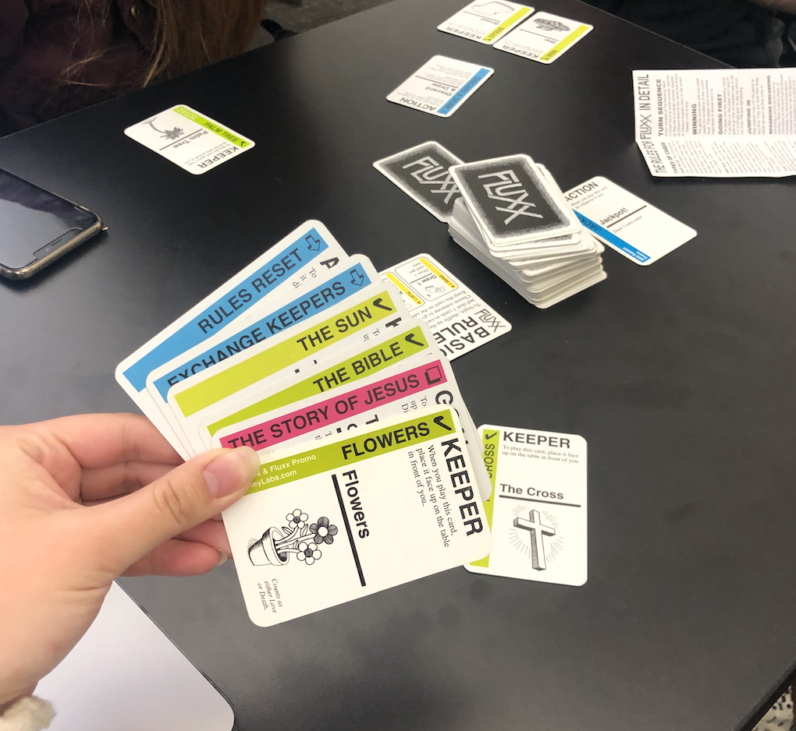
This is my current hand at this point in time...
Mohammad decides to continue on playing a keeper card, Sleep.
Now this is where it gets interesting. The next card intensifies the game...
Nicole draws a Werewolfcreeper card. The Werewolf card states that the player must pass this card to a person of their choosing and remove one of their keeper cards. She decides to attack Sean, turning him into a Werewolf and destroying his Love card.
Devin plays the action card: Discard and draw. He discards his whole hand and draws a new hand.
Sean, the current werewolf, attacks me, turns me into a Werewolf, and discards the Cross. His final move, he plays a keeper card, Death.
I, decide to attack Mohammad, turn him into a Werewolf, and discard Sleep. I play a new Goal card, The Story of Jesus. This means the player with the Cross and Bible on the table wins.
But oh wait... the Cross was just destroyed... dun dun dun!!
Mohammad passes the Werewolf card to Devin and destroys War. He plays the first new rule card: Hand Limit 1. This means all players must discard all of their cards and only have 1 card in their hand.
Nicole plays a new rule card that overrides the first: Hand Limit Two. This means the players can have 2 cards in their hand.
Devin attacks Mohammad, turns him back into a Werewolf, and discards Milk. He plays an action card: Let's do that again!, which allows him to search through the discard pile and find a new action card to play immediately. He chooses Jackpot! He discards 2 card from his hand to follow the new rule and ends his turn.
Sean plays a keeper card: Death.
I play an action card: Empty the trash. This combines the discard pile with the draw pile.
Mohammad discards another Keeper card: Peace from Devin and transfers the werewolf to him. He also plays a New Rule card: Poor Bonus. This rule states that if you have fewer keepers in play than everyone else, draw 1 extra card. In event of a tie, no player receives the bonus.
Connie & Mohammad are tied at 0 so no one receives the bonus
Nicole plays a Goal card: Peace (No War)
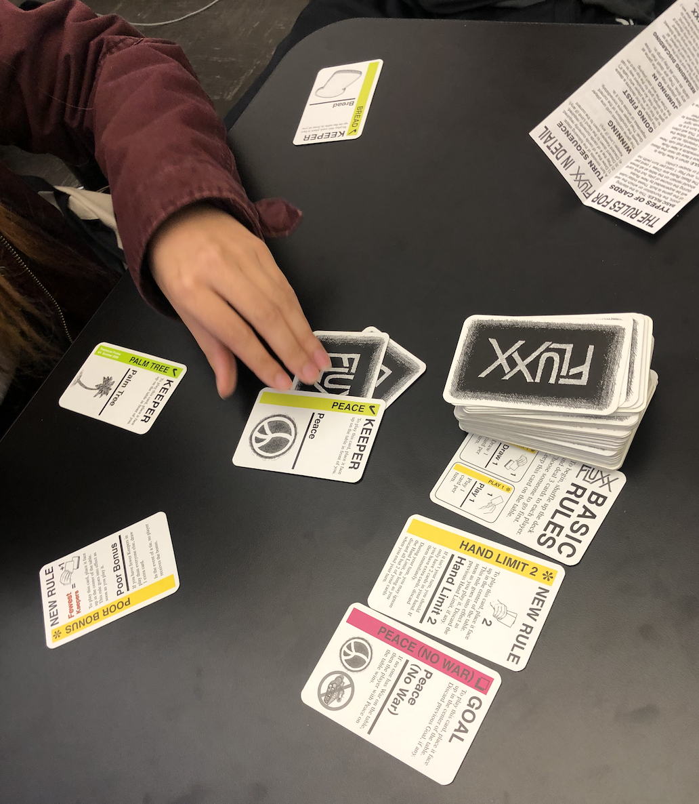
What is currently on the table
In previous round, Mohammad discarded Sean’s peace card, costing him the win
Devin decides to save us all and plays an action: Destroy a Creeper. This Destroys the werewolf card.
Sean plays a keeper card: The Rocket.
I play a Keeper card: Cookies.
Mohammad gets to draw an additional card during his turn due to the Poor Bonus rule. He plays a new rule card: Party bonus. This states that if someone has the party on the table, everyone gets to draw and play 1 extra card during their turn.
Nicole plays a new rule card: Keeper limit. This states that you are only allowed have 3 keeper cards in play. If you have more, discard them.
Devin plays a keeper card: Angry mob of villagers. If you have this on the table, during your turn you may movie it to another player and discard one of that player’s Keepers or Creepers.
Sean plays goal: Jesus Loves You. The player with cross and love wins.
Too bad both love and the cross have been destroyed *sad reacts only*
I play a keeper card: The Toaster
Mohammad plays an action card: Draw 3, play 2 of them. He Draws 3 cards and plays a new goal: To sleep or not to sleep and a keeper: Sleep. He discards the last card.
This move puts Mohammad close to winning, since he set up his goal and keeper card.
However...
Nicole decides to play a new goal: Milk and Cookie. A player needs a milk and cookie card to win.
I currently hold the Cookie card... I'm so close?!?! I MIGHT WIN?!?
Devin plays an action: Jackpot. He draw 3 cards and discards 2 cards to reach rule limit
Sean plays a keeper: The Star.
I play a keeper: The Party.
Party Bonus rule is now in effect
Everyone gets to draw and play 1 extra card during their turn
Mohammad plays an action: Let’s do that again. This allows him to search through discard pile and take any action or new rule and play it. He plays an action: Pandora’s Box.
He begins drawing cards. He draws until he plays 3 new rules. The other cards are discarded.
The first rule he plays is Play All. This means play all of the cards in your hand each turn.
The second rule he plays is Play 2. This overrides the first and means only play 2 cards per turn.
The final rule he plays is Play 5. Each player draw 5 cards per turn.
Sadly this is where the game ends due to time constraints.
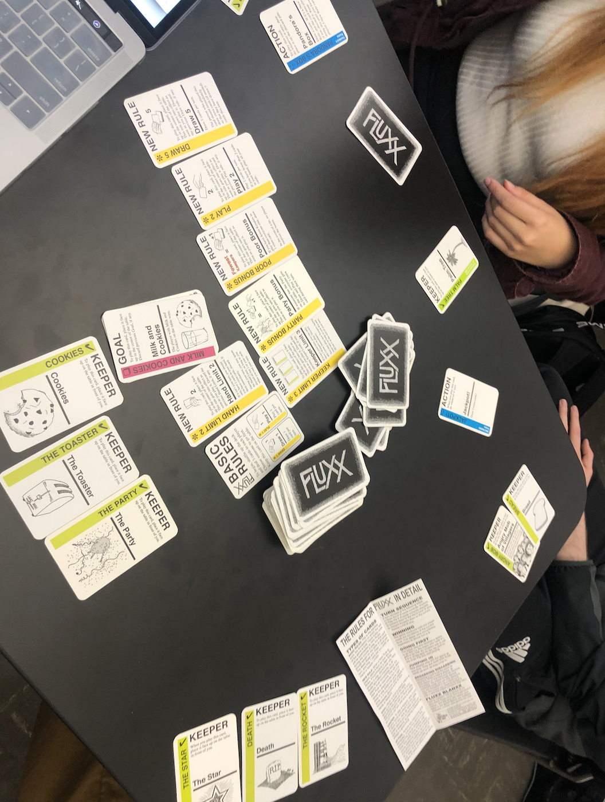
The last round before we had to end our game abruptly.
The game was just getting interesting and intense. We had a lot of new rules on the table and were so close to reaching the goals. But this game is tough because a player can easily betray you and destroy your keeper cards or change the goal at any given moment.
January 29, 2020: Blog 1
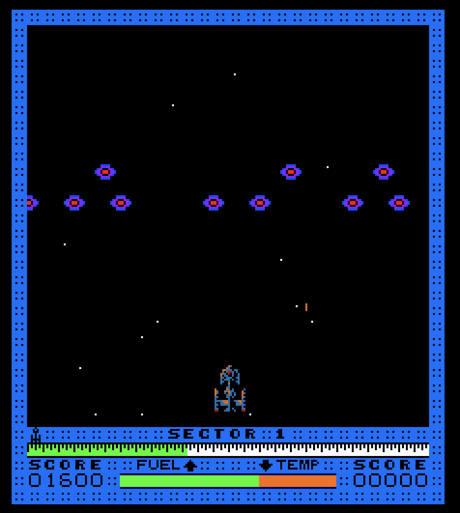1) Write about your experience playing, what happened during play?
I played Astro Blaster. The graphics are definitely accurate in terms of displaying it as it would on an arcade machine. The graphics are simple; I can see all the lines and edges that create the images and backgrounds. This makes it feel very classic. During the play, I used the left and right keys to move the ship horizontally across the screen, and used the command (control) key to shoot at the objects attacking the ship. As the game progresses, the attackers change from moving vertically, horizontally, circularly, etc. They also begin traveling faster, causing me to inaccurately target them. Also, if I continuously shoot, my ship overheats and I must wait until it cools down to return shooting. Another skill that I have is slowing down the attackers, using the alt key. This allows me to accurately shoot them because they do not move as quickly.
2) How is it different playing on an emulator vs playing the game on the original hardware.
It is different from playing on an emulator mainly because of the keys. On the original hardware, usually there would be an analog to quickly and efficiently move the character. Using the right and left keys on an emulator does not allow a smooth movement when controlling the character. As a result, it can cause inaccurate shots when shooting at the targets. Another reason why it is different is because I can replay it as much as I want. There is no sense of spending my money on tokens. This leads me to become more reckless in my plays, losing more quickly and easier. If I was playing this on the original hardware, I would definitely be more careful because I do not want to waste another token. Overall, I think this emulator is great to bring back the classics for those who want to enjoy it for nostalgic sake.